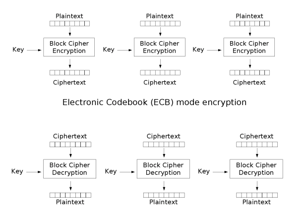
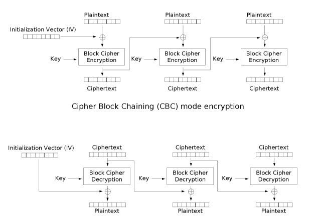

对称加密
明文通过密钥加密得到密文。密文通过密钥解密得到明文。
这类算法再加密和解密时使用相同的密钥，或是使用两个可以简单的互相推算的密钥。与公开密钥加密相比，要求双方获取相同的密钥是对称加密的主要缺点之一。
DES - 数据加密标准
数据加密标准（Data Encryption Standard），简称DES。是一种对称密钥加密块密码算法。
DES是一种典型的块密码。一种将明文分成若干个固定长度的小块，再通过一系列的加密生成同样长度的密文的算法。对DES而言，块长度为64位（8个字节）。
强度不够，现在使用较少。
3DES - 三重数据加密算法
英文名称：Triple Data Encryption Algorithm，缩写为TDEA。也被称为3DES（Triple DES）。是一种对称密钥加密块密码，相当于是对每个数据块应用三次DES算法。
就是因为DES强度过低容易被暴利破解，3DES则是在DES的基础上演变过来的。采用3个密钥，即通过增加DES密钥长度来避免被暴利破解。
AES - 高级加密标准
AES（Advanced Encryption Standard）是用来代替DES的高级加密算法。AES的区块长度固定为128比特，密钥长度则可以是128，192或256比特。
分组密码
分组密码的数学模型是将明文消息编码表示后的数字（简称明文数字）序列，划分成长度为n的组（可看成长度为n的矢量），每组分别在密钥的控制下变换成等长的密文序列。
ECB模式
ECB（Electronic Codebook，电码本）模式是分组密码的一种最基本的工作模式。在该模式下，待处理信息被分为大小合适的分组，然后分别对每一分组独立进行加密或解密处理。

ECB的特点
- 是分组密码最基本的工作模式，操作简单，易于实现。
- 所有分组的加密方式一致，明文中重复内容会在密文中体现。不能很好的隐藏数据。
CBC模式
CBC指的是密码分组链接。
在CBC模式中，每个明文块先与前一个密文块进行异或后，再进行加密。在这种方法中，每个密文块都依赖于它前面的所有明文块。同时，为了保证每条消息的唯一性，在第一个块中需要使用初始化向量。

CBC的特点
- CBC是最常用的工作模式
- CBC加密依赖分组的上下文，加密过程是串行的，无法并行化。
- 明文中微小的变动，会影响后续所有的密文块多改变。
- 其中一个分组丢失（错误），后续所有的都将作废
CBC可以有效的保证密文的完整性，如果一个分组数据块丢失或改变，后续的数据都将无法正常解密。
IV 初始化向量
初始化向量（IV，Initialization Vector）是许多任务作模式中用于将加密随机化的一个位块，由此即使同样的明文被多次加密也会产生不同的密文，避免了较慢的重新产生密钥的过程。
在CBC模式下，同一密钥的情况下重用IV会导致泄露明文首个块的信息。
终端命令
1 | /** |
加密过程是先加密，然后再base64编码。
解密过程是先base64解码。然后再解密。